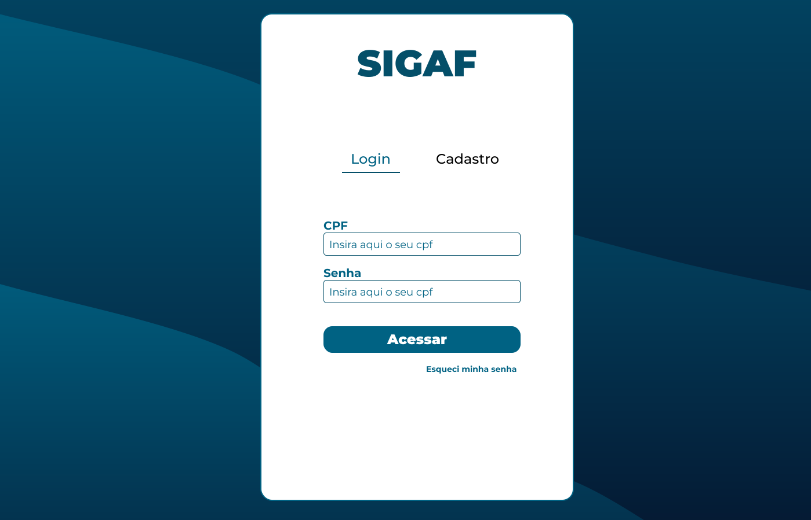

SIGAF
web application developed for a selection process, on demand from the Education Department of Nossa Senhora do Socorro. The front-end was created using HTML5, CSS3, Bootstrap and JavaScript technologies, while the back-end was implemented in PHP, with the database in MariaDB. This application seeks to meet the specific needs of the selection process, providing a responsive and functional interface, together with a robust structure to manage candidate data and the stages of the selection process.
Technologies Used
HTML
CSS
JavaScript
Bootstrap
PHP
MariaDB
